MiPRO · Detalles de diseño
Header de Inicio y Notificaciones · HU-1518 / HU-1579
24-11-2026
Implementación para el app: sistema visual, navegación y detalle de cada pantalla.
Repositorio: https://github.com/Jferreirofrason/Entrega-final-App-MiPRO-
El código, las capturas de este documento y los íconos están ahí, en app/.
Cómo leerlo. Cada número al margen de una captura es una fila de la tabla que viene abajo. Las medidas están tomadas del código y del DOM a 390 px, no son propuestas. Cuando este documento y el código no coincidan, manda el código.
| Parte | Qué hay |
|---|---|
| 01 · Sistema visual | Tipografía, color, estados, íconos y los componentes que usan dos o más pantallas |
| 02 · Navegación | Qué pantalla es cada ruta y cuál entra en esta entrega |
| 03 · Pantallas | Una captura numerada por pantalla, con su tabla |
| 04 · Contenido | Qué dice una notificación, de dónde sale cada texto y en qué orden aparecen |
01 · Sistema visual
1.1 Tipografía
Dos fuentes. Bebas Neue en mayúsculas para los títulos de pantalla, de grupo y de hoja. Helvetica Neue LT Std para todo lo demás, con Arial de respaldo. Tamaños en px, sin escalado propio: siguen el ajuste del sistema.
Los nombres de la primera columna son de este documento, para poder citarlos en las tablas. Hoy no existen como estilos con nombre: el tamaño se escribe en cada lugar. Si se van a reusar, conviene nombrarlos de verdad.
| Nombre | Muestra | Fuente | Tamaño |
|---|---|---|---|
titulo/pantalla |
NOTIFICACIONES | Bebas Neue 400, mayúsculas, interletra 1 | 20 |
titulo/grupo |
HOY | Bebas Neue 400, mayúsculas, interletra 1 | 16 |
titulo/hoja |
NOTIFICACIONES | Bebas Neue 400, mayúsculas, interletra 1 | 20 |
titulo/confirmacion |
¿Borrar todas las notificaciones? | Helvetica 600 | 17 / 23 |
saludo |
HOLA, MARÍA | Bebas Neue 400, mayúsculas, interletra 1 | 20 |
saludo/sub |
¿Qué hacemos hoy en tu hogar? | Helvetica 400 | 12 |
avatar/inicial |
M | Helvetica 600 | 18 en el avatar de 44 · 36 en el de 88 |
contador |
10 notificaciones sin leer | Helvetica 500 | 13 |
fila/encabezado |
Servicio · Instalación de aire | Helvetica 400 | 12 / 17 |
fila/titulo |
Tu cita está programada | Helvetica 500 sin leer · 400 leída | 15 / 20 |
fila/fecha |
9:30 a. m. | Helvetica 400 | 12 |
chip/estado |
Cita programada | Helvetica 500 | 12 / 16 |
cuerpo/md |
Cuando tengamos información sobre tus servicios | Helvetica 400 | 14 / 20 |
cuerpo/sm |
Esta acción eliminará todas las notificaciones | Helvetica 400 | 13 / 19 |
accion/hoja |
Marcar todas como leídas | Helvetica 500 | 15 / 20 |
accion/detalle |
segunda línea de una acción | Helvetica 400 | 13 / 18 |
boton |
Borrar todas | Helvetica 500 | 13 |
aviso |
Borramos todas tus notificaciones | Helvetica 400 | 13 / 19 |
campana/contador |
10 | Helvetica 500 | 10 |
1.2 Color
Ningún color se escribe a mano. Todos son tokens del sistema, y ese es el único lugar donde viven. Los códigos de esta tabla están para leer, no para copiar al código.
Diccionario de colores
| Nombre | Código |
|---|---|
--primary-yellow |
#FFEE00 |
--amarillo-sin-leer |
rgba(255, 238, 0, 0.10) |
--primary-black |
#000000 |
--primary-white |
#FFFFFF |
--gray-80 |
#414141 |
--gray-60 |
#717171 |
--gray-40 |
#929292 |
--gray-20 |
#D0D0D0 |
--gray-8 |
#ECECEC |
--gray-3 |
#F6F6F5 |
--info-blue |
#336DD0 |
--success-green |
#58CA8A |
--error-red |
#E05263 |
| oro oscuro | #8A7A00 |
El oro oscuro es el único color de esta entrega que no es un token. Es el
texto del estado En revisión. El amarillo de marca no contrasta sobre
blanco, así que el chip lleva el amarillo al 20 % de fondo y la palabra en
oro. Si se queda, le corresponde un nombre propio.
Para qué se usa cada uno
| Nombre | Para qué |
|---|---|
--primary-yellow |
Fondo del avatar, barra de la fila sin leer, Deshacer del aviso |
--amarillo-sin-leer |
Sombreado de la fila sin leer |
--primary-black |
Títulos, íconos del encabezado, punto de no leída, fondo del aviso |
--primary-white |
Fondo de las dos pantallas y de las hojas |
--gray-80 |
Título de una fila leída, cuerpo de la confirmación |
--gray-60 |
Encabezado del caso sin leer, descripción del vacío, línea de estado del menú |
--gray-40 |
Fecha y hora, papelera, campana del vacío, encabezado del caso leído |
--gray-20 |
Borde del avatar, borde del botón de volver, agarre de las hojas |
--gray-8 |
Separadores de 1 pt |
--gray-3 |
Fila al tocarla, pie de la confirmación |
--error-red |
Borrar todas, contador de la campana |
Color por estado
Los cinco salen de un solo mapa de estados, el mismo que usa el historial: un estado no puede verse de dos colores según desde dónde se lo mire.
| Estado | Chip | Ícono | Fondo del chip | Texto e ícono |
|---|---|---|---|---|
| Solicitud recibida | 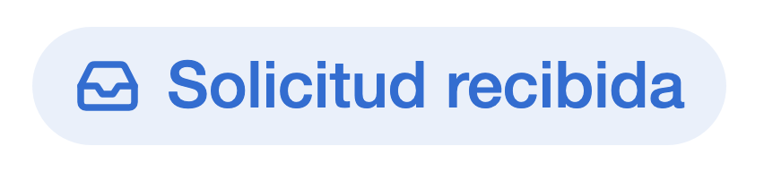 |
08 Inbox |
rgba(51, 109, 208, 0.1) |
--info-blue #336DD0 |
| En revisión | 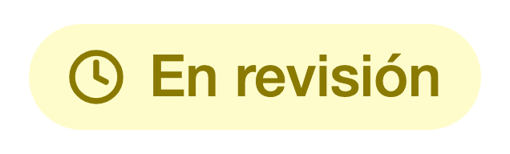 |
09 Clock |
rgba(255, 238, 0, 0.2) |
oro oscuro #8A7A00 |
| Cita programada | 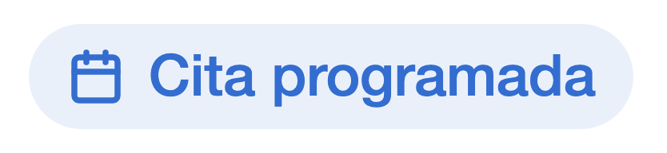 |
10 Calendar |
rgba(51, 109, 208, 0.1) |
--info-blue #336DD0 |
| Completada | 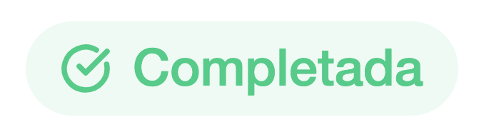 |
11 CheckCircle |
rgba(88, 202, 138, 0.1) |
--success-green #58CA8A |
| Cancelada | 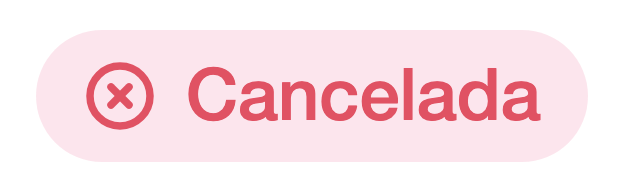 |
12 XCircle |
rgba(226, 3, 77, 0.1) |
--error-red #E05263 |
Los chips de esa columna son la muestra real, recortada de la pantalla: ese es el color y ese es el ícono. Cada estado se reconoce por tres cosas a la vez (color, ícono y palabra), nunca por el color solo.
| Estado | Clave visual |
|---|---|
| Solicitud recibida | solicitud recibida |
| En revisión | en progreso |
| Cita programada | agendado |
| Completada | finalizado |
| Cancelada | cancelado |
Solicitud recibida y Cita programada comparten el azul. Se distinguen
por el ícono y por la palabra, no por el color.
1.3 Estados de los controles
No hay estado deshabilitado en esta entrega: un control que no tiene sentido
no se muestra, no se apaga. El menú entero desaparece con la bandeja vacía, y
Marcar todas como leídas desaparece cuando no queda ninguna sin leer.
| Control | Reposo | Al tocar |
|---|---|---|
| Fila de notificación | Transparente o --amarillo-sin-leer |
Fondo --gray-3, con transición de color |
| Papelera de la fila | Ícono --gray-40 |
Opacidad 60 % |
| Volver | Blanco, borde 1 pt --gray-20, radio 10 |
Opacidad 80 % |
| Tres puntos | Sin fondo ni borde | Opacidad 80 % |
| Acción de la hoja | Texto --primary-black |
Fondo --gray-3 |
Cancelar |
Blanco, borde 1 pt --gray-20, radio 10 |
Opacidad |
Borrar todas |
Fondo --error-red, texto blanco, radio 10 |
Opacidad |
Todo lo que se toca mide 44 px de lado como mínimo. Las dos pantallas se midieron en el DOM para comprobarlo.
1.4 Íconos
Los 12 íconos de esta entrega son assets propios: un archivo SVG por
ícono, guardados en el repositorio de la entrega,
en app/docs/iconos/, igual que las fotos de las categorías:
https://github.com/Jferreirofrason/Entrega-final-App-MiPRO-/tree/main/app/docs/iconos
Cada archivo va a 24 × 24, trazo 2 y color heredado. El tamaño y el color de cada uso están más abajo, en la tabla de usos: el mismo archivo sirve para el negro del encabezado y para el gris de la papelera.
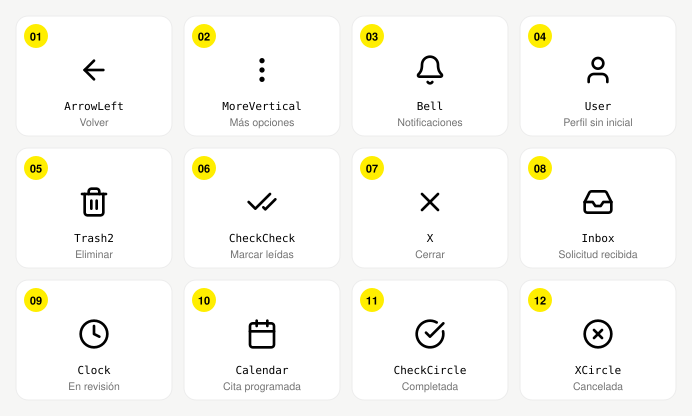
| # | Ícono | Nombre | Archivo |
|---|---|---|---|
| 01 | ArrowLeft |
01-arrow-left.svg |
|
| 02 | MoreVertical |
02-ellipsis-vertical.svg |
|
| 03 | Bell |
03-bell.svg |
|
| 04 | User |
04-user.svg |
|
| 05 | Trash2 |
05-trash-2.svg |
|
| 06 | CheckCheck |
06-check-check.svg |
|
| 07 | X |
07-x.svg |
|
| 08 | Inbox |
08-inbox.svg |
|
| 09 | Clock |
09-clock.svg |
|
| 10 | Calendar |
10-calendar.svg |
|
| 11 | CheckCircle |
11-circle-check-big.svg |
|
| 12 | XCircle |
12-circle-x.svg |
El número manda. Es el mismo en la lámina, en el nombre del archivo y en la columna «Icono» de las tablas de la Parte 03. Un ícono se pide por su número, no por su descripción.
Los archivos son la fuente. Si un ícono cambia, se cambia el archivo: la lámina y las tablas de este documento lo muestran cambiado sin tocar nada más.
Tamaño y trazo
| Trazo | Dónde | Por qué |
|---|---|---|
| 2.5 | El ícono de 12 del chip de estado | A ese cuerpo, con trazo 2 se desarma |
| 2 | Todo lo demás | Es el trazo base |
| 1.5 | La campana de 48 del vacío | A ese tamaño un trazo grueso pesa más que el texto |
| Ícono | # | Dónde se ve | Tamaño | Trazo | Color |
|---|---|---|---|---|---|
03 Bell |
Campana del encabezado del Inicio | 22 | 2 | --primary-black |
|
04 User |
Avatar, cuando no hay inicial válida | la mitad del círculo: 22 en el avatar de 44 | 2 | --primary-black |
|
01 ArrowLeft |
Volver, en la barra superior | 20 | 2 | --primary-black |
|
02 MoreVertical |
Más opciones, en la barra superior | 20 | 2 | --primary-black |
|
05 Trash2 |
Eliminar, en la fila | 16 | 2 | --gray-40 |
|
| 08 a 12 | Chip de estado, en la fila | 12 | 2.5 | el del estado, ver 1.2 | |
03 Bell |
Bandeja vacía | 48 | 1.5 | --gray-40 |
|
06 CheckCheck |
Marcar todas como leídas, en el menú | 20 | 2 | --primary-black |
|
06 CheckCheck |
Línea de estado, en el menú | 20 | 2 | --gray-60 |
|
05 Trash2 |
Borrar todas, en el menú | 20 | 2 | --error-red |
|
07 X |
Cerrar el menú de acciones | 18 | 2 | --gray-60 |
|
07 X |
Cerrar la confirmación de borrado | 18 | 2 | --gray-60 |
El ícono del estado no se elige en la pantalla. La fila lo toma del mapa de estados, que da ícono, color y fondo juntos. Por eso un estado se ve igual en la bandeja y en el historial, y por eso se cambia en un solo lugar.
1.5 Componentes
Controles que usan dos o más pantallas. Los propios de una sola se definen en su sección de la Parte 03.
Avatar de perfil
Un solo componente, AvatarDePerfil, para el encabezado del Inicio y para
Perfil. Recibe un solo parámetro, tamano. Todo lo demás se deriva de ahí.
| Parte | Componente | Icono | Fuente | Color |
|---|---|---|---|---|
| Contenedor | Círculo · 44 en el Inicio, 88 en Perfil · borde 1 pt | — | — | --primary-yellow · borde --gray-20 |
| Inicial | Una letra, nunca dos · cuerpo round(tamano × 0.41) · interlínea 1 |
— | avatar/inicial |
--primary-black |
| Sin inicial | Ícono a round(tamano × 0.5) |
04 | — | --primary-black |
| Botón que lo contiene | 44 × 44 · abre Perfil | — | — | — |
- Por qué Helvetica y no Bebas: es una letra suelta, no un título. Con Bebas se lee como un logotipo.
- Por qué el cuerpo se calcula: para no tener un número suelto por cada uso. Si aparece un tercer tamaño, la letra acompaña sola.
- No hay fotos, ni emojis, ni dos iniciales. El componente no acepta una URL de imagen: no es un parámetro que se pueda pasar por error.
La regla de la inicial está escrita una sola vez, y con pruebas:
- Descarta los espacios del principio.
" maría"daM. - Toma el primer carácter, nunca dos.
"María López"daM. - Pasa a mayúscula respetando el español.
"álvaro"daÁ,"ñusta"daÑ,"óscar"daÓ. - Si ese carácter no es una letra, devuelve
null."123","#maría"y"_"no dan inicial. - Sin nombre devuelve
null, y entonces se muestra el ícono 04.
Barra superior
| Parte | Componente | Icono | Fuente | Color |
|---|---|---|---|---|
| Contenedor | Barra fija arriba · padding 20 / 24 / 16 · sombra 0 2px 10px rgba(0,0,0,0.05) |
— | — | --primary-white |
| Volver | Botón 44 × 44 · radio 10 · borde 1 pt | 01 | — | ícono --primary-black · borde --gray-20 |
| Título | 1 línea con elipsis · a 12 del botón | — | titulo/pantalla |
--primary-black |
| Más opciones | Botón 44 × 44 · sin fondo ni borde · al borde derecho | 02 | — | --primary-black |
Fila de notificación
La fila entera es el botón. Sin chevron y sin ícono por tipo: lo dice el texto.
| Parte | Componente | Icono | Fuente | Color |
|---|---|---|---|---|
| Contenedor | Alto 98 con una línea de título · separador inferior 1 pt | — | — | sin leer --amarillo-sin-leer · leída transparente |
| Barra de sin leer | 3 pt al borde izquierdo, alto completo | — | — | --primary-yellow |
| Zona que abre | 346 × 98 · padding 14 / 4 / 14 / 24 · rejilla 8px 1fr con hueco 10 |
— | — | al tocar --gray-3 |
| Punto de sin leer | 8 × 8 · círculo · a 6 del tope | — | — | --primary-black · leída transparente |
| Encabezado del caso | 1 línea con elipsis | — | fila/encabezado |
sin leer --gray-60 · leída --gray-40 |
| Título | Hasta 2 líneas · a 3 del encabezado | — | fila/titulo |
sin leer --primary-black · leída --gray-80 |
| Fecha y hora | A la derecha, en la línea base del título | — | fila/fecha |
--gray-40 |
| Chip de estado | A 7 del título · ver abajo | 08 a 12 | chip/estado |
el del estado |
| Papelera | 44 de ancho · alto completo · a 15 del tope | 05 | — | --gray-40 |
| Separador | 1 pt entre filas, no antes de la primera | — | — | --gray-8 |
⚠️ Mirar el sombreado con la bandeja entera sin leer. El amarillo marca una fila contra las demás. Cuando ninguna se abrió aparece en todas y deja de señalar, que es lo que se ve en la captura de 3.2, con las diez sin leer. Se implementó así porque negocio lo pidió. Queda para revisar con bandejas reales, mezcladas.
Dónde va el sombreado: en el contenedor de la fila, no en la zona que abre. Así llega hasta la papelera y la fila se lee como una sola pieza.
Chip de estado
| Parte | Componente | Icono | Fuente | Color |
|---|---|---|---|---|
| Contenedor | Alto automático · padding 3 / 8 · radio 999 · hueco 5 | — | — | el fondo del estado, ver 1.2 |
| Ícono | 12 · trazo 2.5 | 08 a 12 | — | el del estado |
| Palabra | Siempre escrita, nunca solo el color | — | chip/estado |
el del estado |
Los cinco, como se ven:
El color acompaña, no informa solo. El chip lleva siempre la palabra del estado, además del color y del ícono.
Hoja de acciones
La misma hoja que usa el resto de la app.
| Parte | Componente | Icono | Fuente | Color |
|---|---|---|---|---|
| Fondo | Capa que cierra al tocar | — | — | rgba(0, 0, 0, 0.45) |
| Hoja | Anclada abajo · radio superior 24 · alto máximo 80 % · sombra 0 -8px 30px rgba(0,0,0,0.15) |
— | — | --primary-white |
| Agarre | 48 × 6 · radio completo | — | — | --gray-20 |
| Título | Con la X al lado · borde inferior 1 pt | — | titulo/hoja |
--primary-black · borde --gray-8 |
| Cerrar | Botón 36 × 36 | 07 | — | --gray-60 |
| Acción | Alto mínimo 52 · padding 8 / 24 · hueco 14 · ícono en columna de 24 | 05 06 | accion/hoja |
normal --primary-black · destructiva --error-red |
| Línea de estado | Misma fila, sin acción: no se toca | 06 | accion/hoja |
--gray-60 |
Hoja de confirmación
| Parte | Componente | Icono | Fuente | Color |
|---|---|---|---|---|
| Fondo | Capa que cierra al tocar | — | — | rgba(0, 0, 0, 0.45) |
| Hoja | Anclada abajo · radio superior 24 · alto máximo 90 % | — | — | --primary-white |
| Agarre | 48 × 6 · radio completo | — | — | --gray-20 |
| Título | Hasta 2 líneas · con la X al lado | — | titulo/confirmacion |
--primary-black |
| Texto | Dice qué se pierde y que no se recupera | — | cuerpo/sm |
--gray-80 |
| Pie | Dos botones · borde superior 1 pt | — | — | fondo --gray-3 · borde --gray-8 |
| Secundaria | Radio 10 · padding 12 / 18 · alto mínimo 44 | — | boton |
blanca, borde --gray-20, texto --primary-black |
| Destructiva | Radio 10 · padding 12 / 18 · alto mínimo 44 | — | boton |
--error-red con texto --primary-white |
Se cierra con Cancelar, con la X, tocando afuera o con Escape.
Aviso
| Parte | Componente | Icono | Fuente | Color |
|---|---|---|---|---|
| Contenedor | Flotante abajo, centrado · a 16 del borde seguro · radio 12 · padding 10 / 12 / 10 / 16 · hueco 16 | — | — | --primary-black |
| Texto | 1 línea | — | aviso |
--primary-white |
Deshacer |
Alto mínimo 36 · solo cuando la acción se puede deshacer | — | aviso peso 500 |
--primary-yellow |
| Aviso | Dura | Lleva Deshacer |
|---|---|---|
Notificación eliminada |
6 s | Sí |
Borramos todas tus notificaciones |
4 s | No, porque no se puede deshacer |
02 · Navegación
| Pantalla | Ruta | En esta entrega |
|---|---|---|
| Inicio | / |
3.1, solo el encabezado |
| Notificaciones | /notificaciones |
3.2 |
| Bandeja vacía | /notificaciones |
3.3 |
| Menú de acciones | /notificaciones |
3.4 |
| Confirmar borrado | /notificaciones |
3.5 |
| Detalle de la notificación | /notificaciones |
3.6, a confirmar |
| Perfil | /perfil |
Destino del avatar, sin cambios |
| Detalle del servicio | /servicios/{id} |
Destino de la fila, sin cambios |
| Detalle del reclamo | /reclamos/{id} |
Destino de la fila, sin cambios |
Todas las rutas van con #: el router es createHashRouter.
No se tocan Servicios, Garantía, Perfil, Productos ni la barra inferior.
03 · Pantallas
Cada número al margen de la captura es una fila de la tabla.
3.1 Inicio · encabezado
Lo único que cambia del Inicio. La foto de perfil se reemplaza por la inicial del nombre sobre amarillo, y el avatar es el acceso a Perfil.
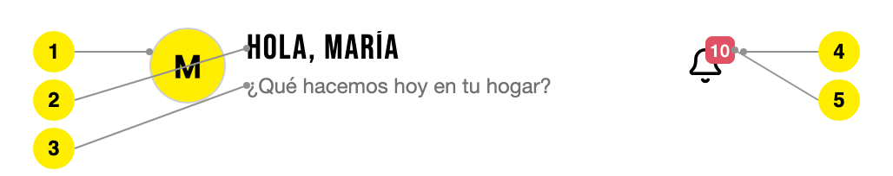
| # | Elemento | Componente | Icono | Fuente | Color |
|---|---|---|---|---|---|
| 1 | Avatar | Avatar de perfil | 04 si no hay inicial | avatar/inicial |
--primary-yellow |
| 2 | «Hola, María» | Encabezado del Inicio | — | saludo |
--primary-black |
| 3 | «¿Qué hacemos hoy en tu hogar?» | Encabezado del Inicio | — | saludo/sub |
--gray-60 |
| 4 | Campana | Botón 44 × 44 | 03 | — | --primary-black |
| 5 | Contador sin leer | Pastilla 16 de alto · radio 4 · padding 0 / 3 | — | campana/contador |
--error-red con texto --primary-white |
El avatar es aria-hidden: lo que se anuncia es el botón que lo contiene.
| Nombre | Rótulo del botón |
|---|---|
"María" |
Perfil de María |
" María López " |
Perfil de María López |
| sin nombre | Mi perfil |
3.2 Notificaciones
Raíz de la bandeja. Lista las notificaciones agrupadas por fecha y ofrece las acciones de la bandeja. Al tocar una fila se abre el detalle del caso y la notificación queda leída.
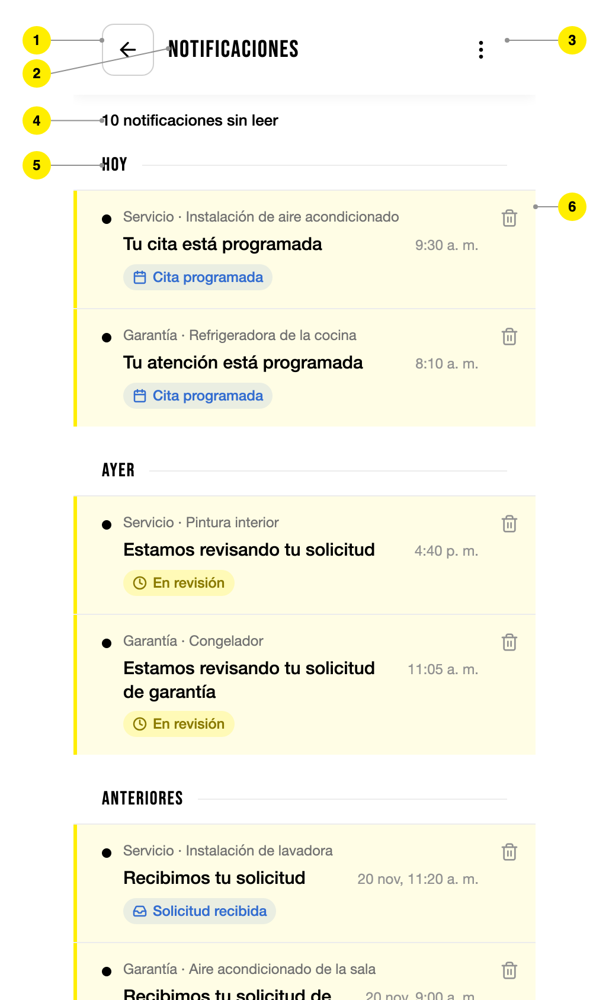
| # | Elemento | Componente | Icono | Fuente | Color |
|---|---|---|---|---|---|
| 1 | Volver | Barra superior | 01 | — | --primary-black |
| 2 | Título «Notificaciones» | Barra superior | — | titulo/pantalla |
--primary-black |
| 3 | Más opciones | Barra superior | 02 | — | --primary-black |
| 4 | «10 notificaciones sin leer» | Contador · padding 12 / 24 / 2 | — | contador |
--primary-black |
| 5 | «Hoy», «Ayer», «Anteriores» | Encabezado de grupo · línea al lado | — | titulo/grupo |
texto --primary-black · línea --gray-8 |
| 6 | Una notificación | Fila de notificación | 05 08 a 12 | ver 1.5 | ver 1.5 |
La captura muestra los primeros 844 px. Lo que sigue hacia abajo son más filas iguales.
El contador
Aparece solo con pendientes. Con la bandeja al día no hay nada que contar, y «0 notificaciones sin leer» es ruido.
| Sin leer | Texto |
|---|---|
| 1 | 1 notificación sin leer |
| 2 o más | 10 notificaciones sin leer |
| 0 | no se muestra |
Fecha y hora
| Grupo | Qué muestra |
|---|---|
| Hoy y Ayer | Solo la hora: 9:30 a. m. El grupo ya dice el día |
| Anteriores | Las dos: 16 nov, 11:20 a. m. |
La fila, en detalle
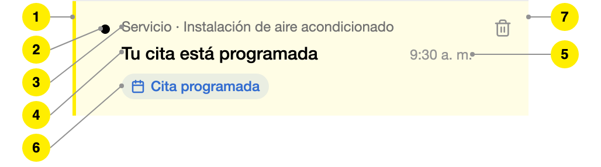
| # | Elemento | Componente | Icono | Fuente | Color |
|---|---|---|---|---|---|
| 1 | Barra y sombreado de sin leer | Fila de notificación | — | — | barra --primary-yellow · fondo --amarillo-sin-leer |
| 2 | Punto de sin leer | 8 × 8 · círculo | — | — | --primary-black |
| 3 | «Servicio · Instalación de aire acondicionado» | Fila de notificación | — | fila/encabezado |
--gray-60 |
| 4 | «Tu cita está programada» | Fila de notificación | — | fila/titulo |
--primary-black |
| 5 | «9:30 a. m.» | Fila de notificación | — | fila/fecha |
--gray-40 |
| 6 | «Cita programada» | Chip de estado | 10 | chip/estado |
--info-blue |
| 7 | Eliminar | Botón 44 de ancho | 05 | — | --gray-40 |
Cuando el texto no entra en la fila, el detalle completo se lee en un modal. Está en 3.6.
La de garantía es la misma fila: lo único que cambia es la palabra del encabezado y el título.
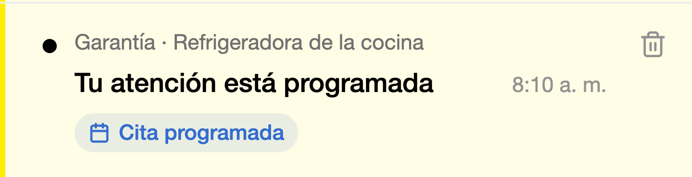
Leída y sin leer
| Sin leer | Leída | |
|---|---|---|
| Fondo de la fila | --amarillo-sin-leer |
transparente |
| Barra al borde | 3 pt --primary-yellow |
sin barra |
| Punto | --primary-black |
sin punto |
| Encabezado del caso | --gray-60 |
--gray-40 |
| Título | --primary-black, peso 500 |
--gray-80, peso 400 |
Sin notificación prioritaria. El amarillo marca lo que no se abrió, no una fila destacada. Manda la fecha.
3.3 Notificaciones · bandeja vacía
Campana, dos líneas de texto, centrado. Sin botón.
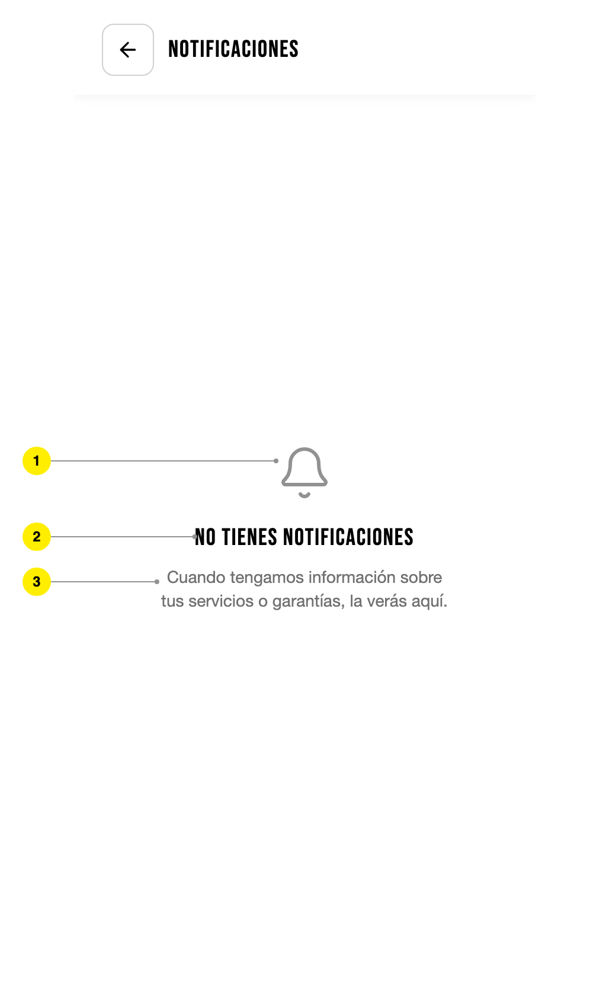
| # | Elemento | Componente | Icono | Fuente | Color |
|---|---|---|---|---|---|
| 1 | Campana | Ícono 48 · trazo 1.5 | 03 | — | --gray-40 |
| 2 | «No tienes notificaciones» | Título del vacío · a 16 del ícono | — | titulo/pantalla |
--primary-black |
| 3 | «Cuando tengamos información sobre tus servicios o garantías, la verás aquí.» | Texto del vacío · a 8 del título · hasta 32 caracteres por línea | — | cuerpo/md |
--gray-60 |
| Posición | Centrado en el espacio que queda debajo del encabezado |
| Rol | role="status" |
| Qué desaparece | El contador y el botón de tres puntos. Queda la flecha de volver y el título |
Sin CTA, sin ilustración, sin emojis. Una bandeja vacía no es un callejón ni una falla: es que está todo al día. No hay nada que ir a hacer.
3.4 Notificaciones · menú de acciones
Se abre con los tres puntos del encabezado. Dos acciones, y solo cuando tienen sentido.
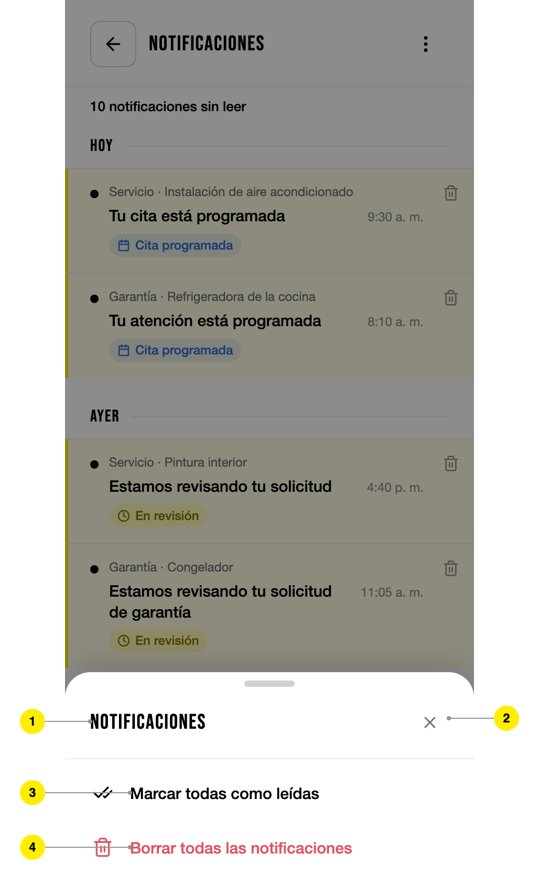
| # | Elemento | Componente | Icono | Fuente | Color |
|---|---|---|---|---|---|
| 1 | Título «Notificaciones» | Hoja de acciones | — | titulo/hoja |
--primary-black |
| 2 | Cerrar | Hoja de acciones | 07 | — | --gray-60 |
| 3 | «Marcar todas como leídas» | Acción de la hoja | 06 | accion/hoja |
--primary-black |
| 4 | «Borrar todas las notificaciones» | Acción de la hoja, destructiva | 05 | accion/hoja |
--error-red |
| Opción | Cuándo aparece |
|---|---|
Marcar todas como leídas |
Solo si hay al menos una sin leer |
Listo, no te queda ninguna sin leer |
En su lugar cuando no queda ninguna sin leer. No es un control: es una línea de estado, gris y sin acción |
Borrar todas las notificaciones |
Si hay al menos una notificación |
| El menú entero | Solo si hay al menos una notificación |
La línea de estado es una decisión de esta implementación, no un pedido de la historia. Sin ella el menú se abre con una sola opción, y esa opción es la destructiva.
3.5 Notificaciones · confirmar borrado
Borrar todas sí pide confirmación, porque no hay vuelta atrás. Eliminar una, no.
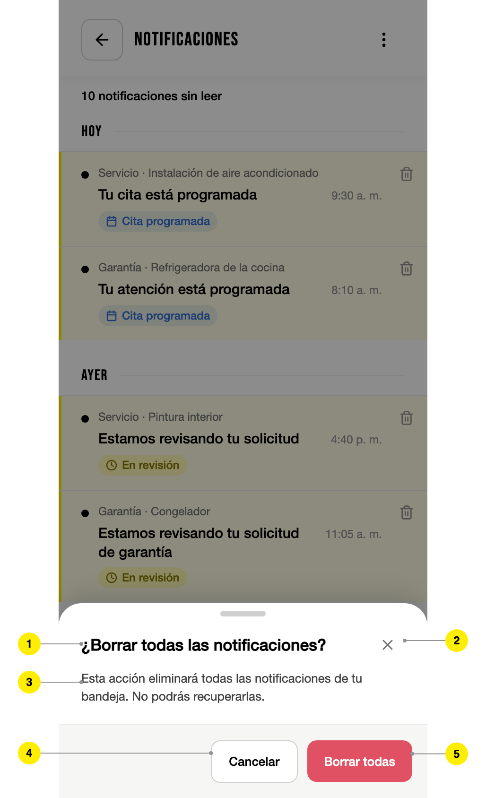
| # | Elemento | Componente | Icono | Fuente | Color |
|---|---|---|---|---|---|
| 1 | «¿Borrar todas las notificaciones?» | Hoja de confirmación | — | titulo/confirmacion |
--primary-black |
| 2 | Cerrar | Hoja de confirmación | 07 | — | --gray-60 |
| 3 | «Esta acción eliminará todas las notificaciones de tu bandeja. No podrás recuperarlas.» | Hoja de confirmación | — | cuerpo/sm |
--gray-80 |
| 4 | «Cancelar» | Botón secundario | — | boton |
blanco con borde --gray-20 |
| 5 | «Borrar todas» | Botón destructivo | — | boton |
--error-red con texto --primary-white |
Al confirmar:
- La bandeja queda vacía y aparece el estado vacío de 3.3.
- Sale el aviso
Borramos todas tus notificaciones, que se va solo a los 4 segundos y no llevaDeshacer.
No hay borrado de un toque. Eliminar una sola, en cambio, no pide
confirmación: muestra Notificación eliminada con Deshacer durante 6
segundos. Para una acción chica, en vez de frenar antes se puede volver atrás
después.
3.6 Notificaciones · detalle de la notificación
⚠️ Esta pantalla no está en el prototipo. La captura es de la versión actual de la app, que negocio pasó como referencia. Las medidas de abajo están derivadas de esa captura, no medidas en pantalla, y por eso van marcadas con ≈. Todo lo demás de este documento sí está medido. Antes de construirlo hay que cerrar los puntos del final de esta sección.
Cuando el texto de la notificación no entra en la fila, la fila lo corta con puntos suspensivos y el texto completo se lee acá. Es para leer, no para navegar: se abre, se lee y se cierra en el mismo lugar.
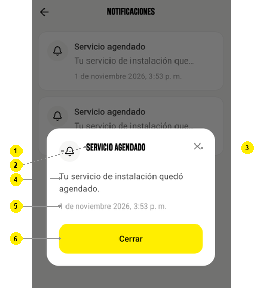
| # | Elemento | Componente | Icono | Fuente | Color |
|---|---|---|---|---|---|
| 1 | Ícono del tipo | Círculo ≈ 38 · glifo ≈ 20 | 03 | — | fondo --gray-3 · glifo --primary-black |
| 2 | Título del estado | En mayúsculas, a 12 del ícono | — | titulo/hoja |
--primary-black |
| 3 | Cerrar | Botón 44 × 44 al borde derecho | 07 | — | --gray-60 |
| 4 | Texto completo | Sin corte, crece hacia abajo | — | cuerpo/md |
--primary-black |
| 5 | Fecha y hora | Día, mes, año y hora | — | cuerpo/sm |
--gray-40 |
| 6 | «Cerrar» | Botón primario · ancho completo · alto ≈ 48 · radio ≈ 14 | — | boton |
--primary-yellow con texto --primary-black |
La tarjeta
| Ancho | ≈ 330, centrada, a ≈ 30 de cada borde |
| Radio | ≈ 24 |
| Fondo de la tarjeta | --primary-white |
| Fondo de atrás | Capa oscura sobre la bandeja, que queda visible |
| Alto | Lo que pida el texto |
Cómo se comporta
| Qué lo abre | Tocar la fila |
| Cómo se cierra | El botón Cerrar, la X, tocar afuera y Escape |
| Qué pasa al cerrar | Vuelve a la bandeja, en el mismo lugar. No navega a ningún otro lado |
| Qué muestra la fila | El mensaje a una línea, cortado con puntos suspensivos |
| Qué muestra el modal | El mensaje entero, sin corte |
Dos salidas para lo mismo. La X y el botón Cerrar hacen exactamente lo
mismo. El botón está porque es la acción esperada al terminar de leer y
porque la X sola, arriba a la derecha, es un blanco chico.
Lo que hay que cerrar antes de construirlo
- A partir de cuándo se corta. Hoy la fila corta a una línea. Falta definir si el corte es por líneas o por caracteres, y qué pasa con un texto corto que entra entero: si igual abre el modal o no abre nada.
- Qué pasa con el detalle del caso. En el prototipo, tocar la fila navega al servicio o al reclamo. Si ahora abre este modal, hay que decidir si el acceso al caso se pierde, si el modal suma un segundo botón para ir al caso, o si conviven las dos cosas.
- El título. En la captura el título del modal y el de la fila son el mismo texto. Conviene confirmar que siempre lo son: si no, hace falta un campo más en el modelo de la notificación.
- La fecha. La fila de la captura muestra la fecha larga siempre. El prototipo agrupa por Hoy, Ayer y Anteriores y muestra solo la hora en los dos primeros. Hay que elegir uno de los dos criterios para toda la pantalla.
04 · Contenido
4.1 Qué es una notificación
Una notificación avisa que una solicitud cambió de estado. Nada más.
Los estados son los mismos que ya usan el historial y los detalles. No hay vocabulario paralelo para la bandeja.
Solicitud recibida · En revisión · Cita programada · Completada · Cancelada
Qué se retiró
| Se fue | Motivo |
|---|---|
Tu visita es mañana |
Es un recordatorio, no un cambio de estado. Nadie define hoy cuándo se dispara |
Técnico asignado |
El modelo no emite la asignación. Salía de una fijación |
Actualizamos tu reclamo |
No dice qué cambió. Lo reemplaza el estado concreto |
| Encuestas y calificaciones | No son un cambio de estado |
| La notificación prioritaria | La daba el recordatorio de visita. Sin él, ningún estado pesa más que otro |
Vuelven cuando se defina quién las emite y cuándo.
4.2 La matriz de títulos
Es cerrada: no hay título por defecto ni armado con plantilla. Un estado sin texto definido no compila, y eso es lo que impide notificarlo.
Servicio
| Estado | Título |
|---|---|
| Solicitud recibida | Recibimos tu solicitud |
| En revisión | Estamos revisando tu solicitud |
| Cita programada | Tu cita está programada |
| Completada | Tu servicio fue completado |
| Cancelada | Tu solicitud fue cancelada |
Garantía
| Estado | Título |
|---|---|
| Solicitud recibida | Recibimos tu solicitud de garantía |
| En revisión | Estamos revisando tu solicitud de garantía |
| Cita programada | Tu atención está programada |
| Completada | Tu solicitud fue completada |
| Cancelada | Tu solicitud fue cancelada |
Por qué las dos columnas no dicen lo mismo: en garantía la persona pidió ayuda por garantía, no «un servicio». La notificación tiene que sonar a lo que pidió.
4.3 Servicio o garantía, siempre en texto
| Tipo de caso | Nombre del caso | Encabezado |
|---|---|---|
| Servicio | Instalación de aire acondicionado | Servicio · Instalación de aire acondicionado |
| Garantía | Refrigeradora Samsung | Garantía · Refrigeradora Samsung |
- No alcanza con el ícono ni con el color: un ícono se interpreta y un color no se lee en voz alta.
- El nombre del caso sale del mismo servicio o reclamo al que la fila ya navega. No es un campo nuevo.
- Si el servicio cambia de nombre, la bandeja lo refleja sola.
4.4 El modelo
interface NotificacionCliente {
id: string;
tipoCaso: "servicio" | "garantia";
estado: EstadoDeSolicitud; // uno de los cinco
fecha: string; // ISO con hora
servicioId?: string; // uno de los dos, nunca los dos
reclamoId?: string;
}
El título no se guarda. Se deriva de tipoCaso más estado. Un cambio de
copy se hace en un solo lugar y no deja notificaciones viejas con el texto
anterior.
4.5 Orden y agrupación
- Grupos Hoy, Ayer, Anteriores, en ese orden. Los vacíos no se muestran.
- Dentro de cada grupo, la más reciente arriba.
- Nada más. Ya no hay prioridad.
4.6 Terminología y accesibilidad
La palabra es notificaciones, en la app y en el código. novedades se
retiró de las dos pantallas de esta entrega.
⚠️
novedadessigue viva en Garantía. No es alcance de esta HU, así que no se tocó.
| Elemento | Qué se anuncia |
|---|---|
| Avatar del Inicio | Perfil de María, o Mi perfil sin nombre |
| Campana | Notificaciones, 10 sin leer, o Notificaciones sin pendientes |
| Fila | Ver Instalación de aire acondicionado |
| Papelera | Eliminar Tu cita está programada |
| Tres puntos | Más opciones, con aria-haspopup="dialog" |
| Bandeja vacía | role="status" |
| Avisos | role="status" |
Cuando este documento y el código no coincidan, manda el código.